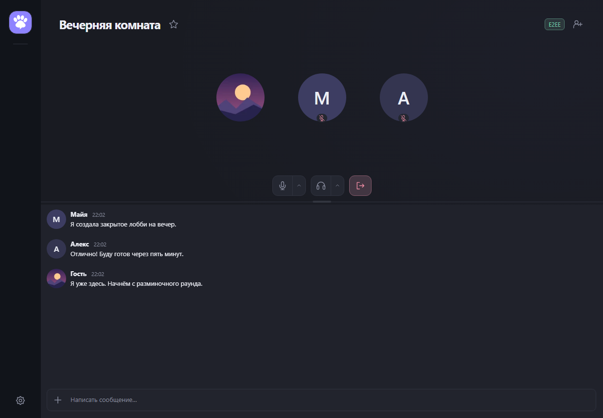
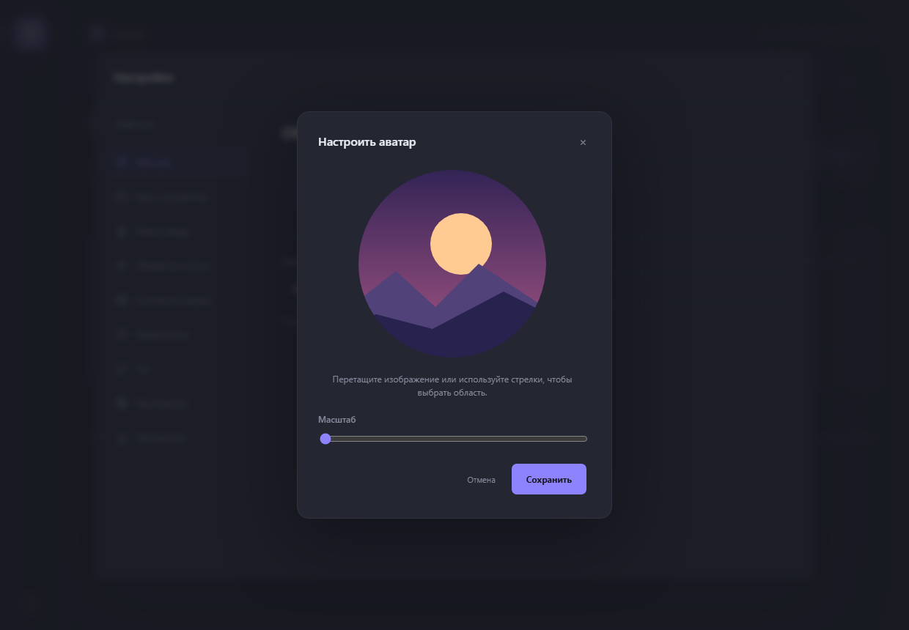
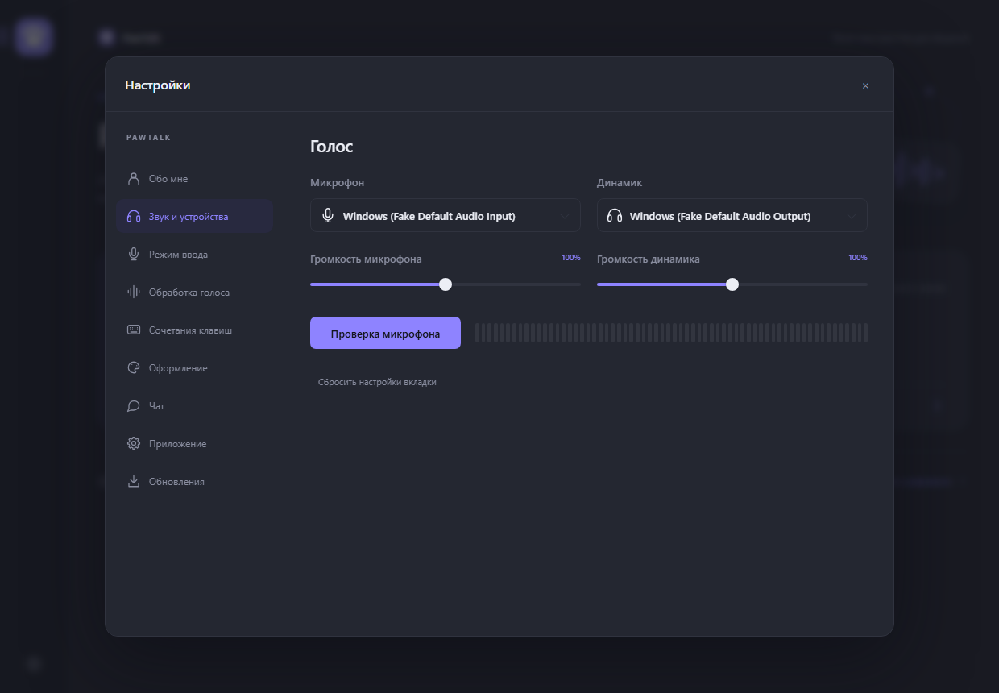
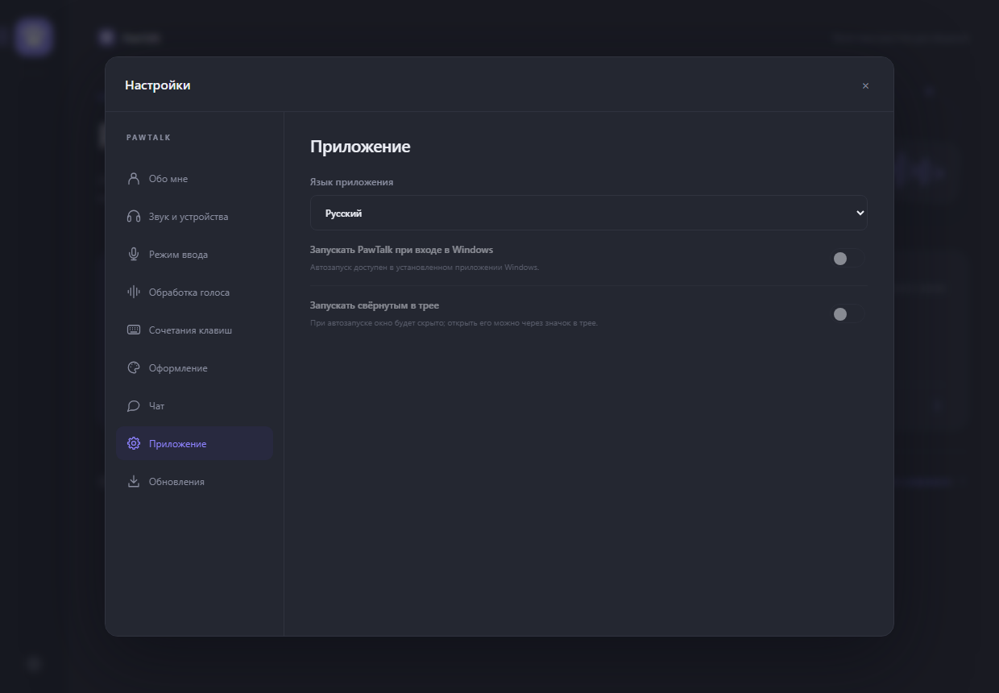

Размещайте у себя
Временная комната на Windows-ПК или постоянный Docker-сервер на Linux amd64/arm64. Гостям достаточно установить клиент.
Голос и текстовый чат для совместных игр и небольших сообществ. Создайте комнату на своём ПК или оставьте её работать на Linux VPS. Для входа — приглашение и никнейм. Без аккаунтов.
PawTalk 0.6.0 — предварительный выпуск · Windows 10/11 x64 · Интерфейс Русский / English
Нужна новая установка; профили и приглашения Voicecord не переносятся.
Установщик без цифровой подписи · Проверяемое автообновление · Описание выпуска, SHA-256 и исходники

Временная комната на Windows-ПК или постоянный Docker-сервер на Linux amd64/arm64. Гостям достаточно установить клиент.
Локальное шумоподавление RNNoise, эхоподавление и автоусиление. Выбирайте устройства, чувствительность и громкость.
Активация голосом или push-to-talk, глобальные сочетания, mute/deafen и громкость каждого участника. Приложение работает в трее.
Меняйте высоту голосовой панели и чата. Отправляйте картинки до 2 МиБ, отвечайте на сообщения и копируйте текст. История подгружается при прокрутке; размер окна задаётся в настройках. На VPS объём хранения задаётся через PAWTALK_CHAT_MAX_MB: 128 МиБ по умолчанию, 0 — без лимита. Ограничения в семь дней нет.
При наборе текста анимируются лапки. Необязательные звуки CC0 отмечают вход и выход из комнаты и сообщают о непросмотренных сообщениях, если приложение неактивно или чат прокручен вверх.
Выберите аватар и оцените круглый кадр перед сохранением.

Установите клиент на каждый Windows-ПК и выберите Русский или English. В настройках задайте никнейм, выберите устройства и проверьте микрофон. Инструменты разработчика не нужны.
Нажмите «Создать комнату», введите название и пароль от 8 символов. Комната доступна, пока приложение хоста запущено.
Передайте полное приглашение лично. Друг вставляет его в «Присоединиться к комнате». В одной локальной сети используйте LAN-приглашение.
Для связи через интернет нужны доступные порты хоста. Автопроброс может не сработать при CGNAT. Альтернатива — Linux VPS с публичным IP. Полная инструкция →
Выберите микрофон и динамики, попробуйте шумоподавление и прослушайте микрофон перед подключением.
Порты хоста по умолчанию: TCP 18443, TCP 18444, UDP 18445. В руководстве сервера описаны проверки firewall и доступности.

Выберите Русский или English в разделе «Приложение». В настройках с боковой навигацией доступны светлая тема, цветовая палитра и скругления. Подсказки соединения и сообщения используют выбранный язык.
Автопроверку обновлений можно отключить или запустить вручную; текущая версия показана рядом. Обновление можно отложить и открыть снова по иконке. Файл проверяется перед установкой, а отдельное окно показывает её ход.
Уже используете 0.1.0? Один раз установите 0.2.0 вручную, чтобы получать следующие обновления из приложения.

Это ранний выпуск. Реальные микрофоны, чистая установка Windows, игры/PTT, разные внешние сети и полная нагрузка ещё требуют аппаратной приёмки.
Клиент работает только на Windows. Linux — серверная платформа. Видео, демонстрация экрана, веб- и мобильные клиенты пока недоступны.
E2EE включается по желанию и остаётся экспериментальным. Одно шифрование транспорта не исключает доступ медиасервера к звуку. Приглашение может содержать пароль и ключ E2EE — передавайте его лично. Модель защиты.
Для небольших голосовых комнат на своём сервере — это целевой сценарий. PawTalk сосредоточен на разговорах без регистрации и не заменяет все возможности этих платформ для сообществ.
Голос идёт по WebRTC через медиасервер LiveKit на ПК хоста или вашем VPS. Гостям нужен Windows-клиент, разворачивать свой сервер не требуется.
Убедитесь, что комната работает, а приглашение актуально. В одной сети используйте LAN-приглашение. Через интернет проверьте входящие порты, firewall, проброс на роутере и VPN. При CGNAT может понадобиться доступный извне VPS. См. сетевую диагностику.
PawTalk проверяет новые выпуски при запуске и проверяет установщик до предложения. Пользователям Voicecord 0.5.2 нужно отдельно установить PawTalk 0.6.0; профили, настройки сервера и приглашения не переносятся. Ошибки и вопросы настройки отправляйте через GitHub Issues. Укажите версию и шаги воспроизведения; удалите пароли, приглашения и личную сетевую информацию.
Собственный код проекта распространяется по GNU AGPL-3.0-only. Условия использования указаны в лицензии и уведомлениях сторонних компонентов.